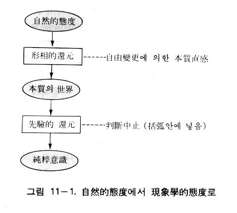
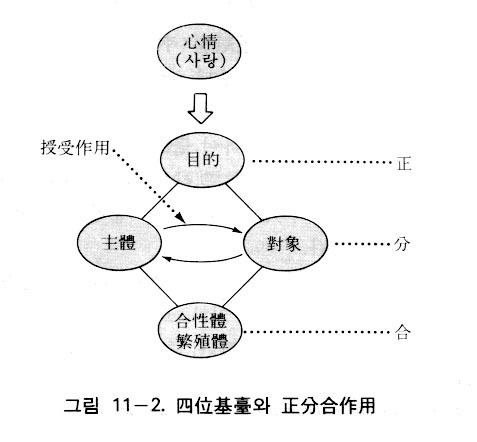
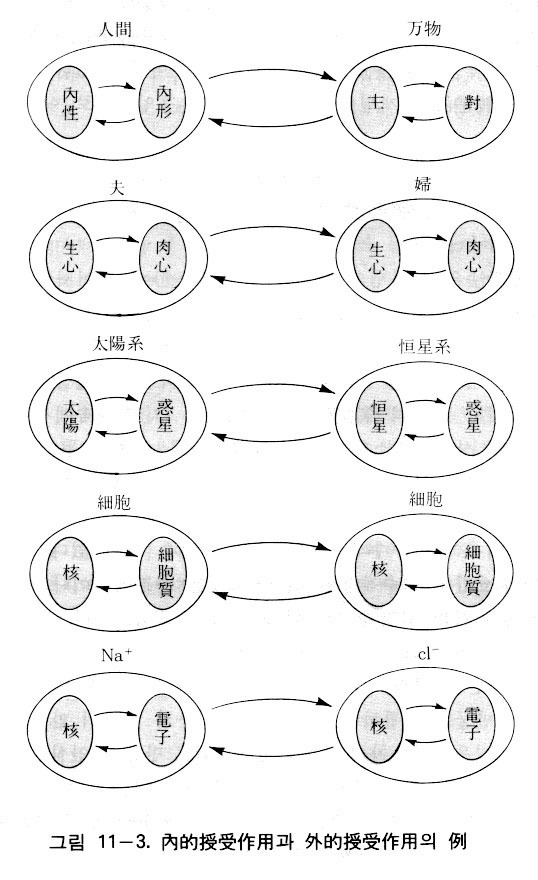
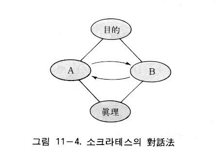
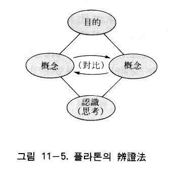
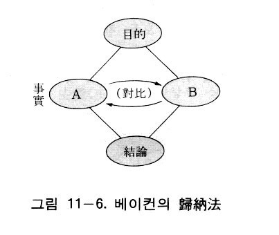
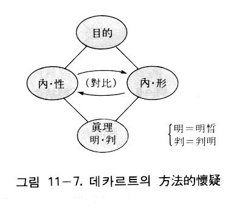
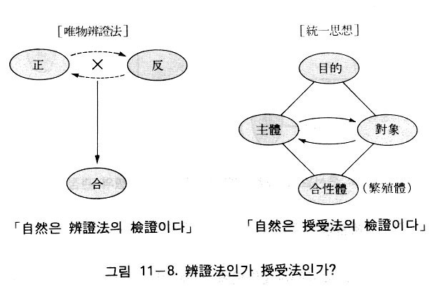

方法論（methodlogy）とは、人間がいかにして客観的な真理に到達することができるかを論ずるものである。実際、方法を意味する英語のmethod は、ギリシア語のmeta（従って）とhodos （道）に由来している。したがってmethod（方法）とは、何らかの目的を達成するためには、一定の道に従わなくてはならないことを意味しているのである。
古代ギリシア以来、今日まで多くの哲学者が、それぞれ特有な方法論を展開し、事物の道理を探求してきた。ここではまず従来の代表的な方法論の要点を紹介し、次に統一思想における方法論すなわち統一方法論を提示する。そして従来の方法論を統一方法論の立場から論評しようとするのである。
ここで一つ付け加えることは、認識論や論理学の場合と同様に、従来の方法論の内容を具体的にまたは学術的に紹介しようとするのではなく、ただ従来の方法論がもっていた問題点に対して、統一方法論が解決しうることを明らかにするために、その要点だけを紹介するということである。
ヘラクレイトスの弁証法（運動法）
ヘーゲルによって弁証法の創始者といわれたヘラクレイトス（Herakleitos, ca.535-475 B.C. ）は、宇宙の根源的な物質（アルケー）を火であると考え、火は絶えず変化しつつあると見た。また「万物は流転する」といって、固定不動のものはなく、一切のものは生成と運動のなかにあると見た。彼は「戦いは万物の父であり、万物の王である」という観点から、万物は対立と闘争によって、生成し、変化していると考えた。そのようにヘラクレイトスが万物を生成、変化、流転という側面から扱ったという点で、ヘーゲルはその方法論を弁証法と呼んだのである。しかしヘラクレイトスは生成、変化の中にも、不変なものがあるといい、それがすなわち法則であって、「ロゴス」と名づけた。また彼は、闘争を通じて調和が生ずるといった。
ヘラクレイトスの方法論は、自然の存在のあり方と自然の発展に関する見方をいうものである。それは事物の動的な側面をとらえようとするものであるから、その方法論（弁証法）を運動法ともいうことができよう。
ゼノンの弁証法（静止法）
万物は流転するというヘラクレイトスの主張とは反対に、エレア学派のパルメニデス（Parmenides, ca.515 B.C. 生）は、存在は不生不滅であり、不変不動であるとした。そして、パルメニデスの思想を受け継いだエレアのゼノン（Zenon, ca.490-430 B.C. ）は、運動を否定し、ただ静止している存在だけがあることを論証しようとした。
物体は動いているように見えても、実は動いていないということを論じた四つの証明があるが、その中の一つが「アキレスは亀を追いこすことができない」というものである。アキレスはトロイ戦争に功労を立てた英雄であって、非常に足が速いが、決して亀を追い越せないというのである。亀が先に出発して、一定の地点にまで進んだとき、アキレスがその後を追いかけたとする。アキレスが亀がいた所に着いたとき、亀はすでにいくらか先に進んでいる。さらにアキレスがそこに着いたとき、亀はすでにさらに少し前に進んでいる。したがって、常に亀はアキレスより先にいるというのである。
もう一つの証明が、「飛ぶ矢は静止している」という飛矢静止論である。Ａ点からＣ点を目指して飛んでいる矢があるとする。そのとき矢は、ＡとＣの間にある無数の点Ｂ1 、Ｂ2、Ｂ3……を通過する。ところがＢ1、Ｂ2、Ｂ3……という点を通過するということは、それらの点で一瞬、止まることを意味する。ところがＡとＣの距離は無数の点の連続であるから、飛ぶということは静止の連続すなわち静止の永続となる。したがって矢は運動せず、静止しているのである。
ゼノンの方法は、相手の主張を認めるとすれば、その主張にどのような矛盾が生じるかを問答式に問い詰めることによって、相手の主張の誤りを暴露していく対話術であった。
アリストテレスはゼノンを弁証法の創始者と呼んだ。運動を否定して、ただ静止する存在があるということを証明しようとするのがゼノンの弁証法であるから、その弁証法を静止法ともいうことができよう。
ソクラテスの弁証法（対話法）
紀元前五世紀の後半、民主政治が発達したアテネでは、多くの青年たちが政治上の成功すなわち出世のために弁論術を学ぼうとしていた。そこで青年たちに弁論術を教えることを職業とする人々が現れるようになったが、当時彼らはソフィストと呼ばれた。
初期のギリシア哲学は自然を研究の対象と見なしていたが、ソフィストたちは自然哲学から視線を転じて人間の問題を論じた。ところが自然現象は客観性、必然性をもっているのに対して、人間に関する問題はみな相対的であって、主観によって各人の解釈は異なるという相対主義や、その解決をあきらめる懐疑主義が生じてきた。ポリス社会のあちこちを歩き回っていたソフィストたちは、行く場所ごとに価値評価の基準が異なることを目撃し、人間に関する限り、真理は存在しないとまで主張するようになった。そして彼らの教える弁論術は、のちには、いかに相手を論破するかという方法のみを重んじるようになり、そのためには詭弁までもためらわずに用いるようになった。
ソクラテス（Sokrates, 470-399 B.C. ）は、そのようにソフィストたちが人々を惑わしているのを嘆き、重要なのは、政治的な成功のための技術的な知識ではなくて、真に人間として生きていくための徳であると主張した。そして徳が何であるかを知ることが真の知であるとした。ソクラテスは、真理を得るためには、まず自らの無知なることを知らなくてはいけないとして、「汝自身を知れ」と叫んだ。そして謙虚な心で人と人が対話することによって、真理に到達できると主張した。そのとき、特殊な事柄から出発して一般的な結論に到達するようになるという。
ところで対話を通じて真理に到達するには、まず質問をしてきた相手の魂の中に眠っている真理を対話によって呼び覚まして、それを導き出さなければならないという。ソクラテスはそれを産婆術といった。ソクラテスのこのような真理探求の方法は、弁証法ないし対話法（問答法）といわれている。
プラトンの弁証法（分割法）
プラトン（Platon, 427-347 B.C. ）は、師のソクラテスのいう徳に関する真の知がいかにして成立するかを論じた。そこでプラトンは、事物をして事物たらしめるところの非物質的な存在が先に存在しなくてはならないと主張し、それをイデアまたはエイドスと名づけた。そして多くのイデアの中で善のイデアを最高のものであるとし、人間は善のイデアを直観するとき、最高の生活を送ることができるとした。
プラトンによれば、真に実存するものはイデアであって、感覚界はイデア界の影にすぎない。したがってイデアに関する認識こそ真なる知であり、イデアに関する認識の方法を彼は弁証法と呼んだ。
プラトンの弁証法は、イデアとイデアの関係を決定し、善のイデアを頂点とするイデア世界の構造を明らかにしようとするものであった。イデアの認識には、普遍的な類概念を種概念に分割（分析）していく、上から下への方向と、個別的なものを総合しながら最高の概念を目指す、下から上への方向の二つの方式がある。そのうち総合の方向はソクラテスの弁証法と一致するものであるが、普通、プラトンの弁証法というとき、分割の方法をいう。
ソクラテスの場合、人と人の対話によって真なる知を得ようとするのであるが、プラトンの弁証法は概念の分類の方法であって、思惟が自ら問い、自ら答えていく、思惟自身の自問自答であった。
アリストテレスの演繹法
いかにして正しい知識が得られるかという課題に関する理論を、アリストテレス（Aristoteles, 384-322 B.C.）は、知識についての学、すなわち論理学として体系化した。「オルガノン」（Organon）としてまとめられている論理学は、正しい思考によって真理に至るための道具であって、それは諸学への予備学であるともいわれている。
アリストテレスによれば、真の知識は論証によるべきである。彼は特殊から普遍に進む帰納法も認めていたが、それは完全性に欠けるとして、普遍から特殊を演繹する演繹法こそ確実な知識を与えるとした。その基本となっている形式が三段論法である。三段論法の代表的な例は、次のようである。
すべての人間は死すべきものである（大前提）。
ソクラテスは人間である（小前提）。
ゆえにソクラテスは死すべきである（結論）。
アリストテレスの論理学は中世において、神学や哲学の諸命題を演繹的に証明するための道具として重要視された。そして約二千年間、アリストテレスの三段論法はほとんど変更なく広く認められてきたのである。
ベーコンの帰納法
中世を通じて超越的な存在としてとらえられていた神は、ルネサンスに至り、次第にその超越的性格を失っていった。そればかりでなく、神を自然の中に内在する存在としてとらえる汎神論的な自然哲学が生じた。そのような中世時代が終わり近世が始まる時期に、一人の哲学者が出現して、自然の探求をいかになすべきかという自然研究の新しい方法を提示した。それがフランシス・ベーコン（Frascis Bacon, 1561-1626 ）であった。
ベーコンによれば、過去の学問は「神に身をささげた修道女のように不妊であった」のであり、それは主としてアリストテレスの方法を用いてきたからであると考えた。
アリストテレスの論理学は、論証のための論理学であったが、そのような論理でもっては、他人を説得することはできても、自然現象から新たな真理を導き出すことはできない。そこで新たな真理を見いだす論理として彼が提示したのが帰納法であり、彼はアリストテレスの「オルガノン」に対抗して、自己の論理学を「新オルガノン」（Novum Organum ）と名づけた。
アリストテレスの論理学を根拠としている伝統的な学問は、ただ無用な言葉の論争にすぎないとして、ベーコンは、確実な知識を得るためには、まずわれわれが陥りやすい偏見を取り除いて、自然そのものを直接に探求しなくてはならないと主張した。その偏見には四つの偶像（イドラ）がある。種族の偶像、洞窟の偶像、市場の偶像、劇場の偶像がそれである（「認識論」参照）。そのような偶像を取り除いたのちに、純粋な精神でもって、自然に対して実験と観察を行い、そこから個々の現象の中に潜んでいる共通の本質を見いださなければならないのである。
ベーコン以前にも帰納法はあったが、以前の帰納法が少数の観察と実験から一般的な法則を導こうとしたのに対して、ベーコンはできる限り多くの事例を集めること、反証（否定的事例）を重視することなどにより、確実な知識を得ようとするための、真の帰納法を提示しようと試みたのである。
デカルトの方法的懐疑
ルネサンス時代以後、自然科学の目覚ましい成果に基づいて、十七世紀の哲学は機械的自然観を絶対的な真理と考え、これと矛盾しないように努めた。そして機械的自然観をより根源的なものから基礎づけようとしたのが合理論であり、その代表者がデカルト（René Descartes, 1596- 1650 ）であった。
デカルトは数学的方法を唯一の真なる学問的方法であると考え、数学におけるように、まずだれにとっても明らかな直観的真理を求め、それを基礎として、新たな確実な真理を演繹的に展開しようとした。
そこで哲学の出発点となる直観的真理をいかにして求めるかということが問題となる。彼は一切の知識の原理となるべき絶対確実な真理を探求するために、疑える限りすべてのことを疑ってみた。そして彼は、一切を疑ってみても、われわれが疑いながら存在しているという、その事実だけは疑いえないということに気づいた。彼はそのことを「われ思う、ゆえにわれあり」（Cogito, ergo sum）という有名な命題で表した。ところで、この命題がなぜ、何の証明も必要ない確実な命題なのかといえば、それは明晰かつ判明であるからだとした。そして、そこから「われが明晰判明に理解するところのものはすべて真である」という一般的な真理の基準を導いた。
デカルトの懐疑は、懐疑のための懐疑ではなくて、確実な真理を発見するための懐疑であって、これを「方法的懐疑」という。デカルトは明晰判明に直観される公理から出発して、個々の命題を証明していく数学的方法に倣って、確実な知識を得ようとしたのである。
ヒュームの経験論
デカルトを代表とする合理論に対して、精神的なものを、経験的に得られる自然法則に基づいて説明していこうという立場をとったのが、イギリスを中心として発展した経験論であった。
ヒューム（David Hume, 1711-76 ）は「諸学の完全な体系」を見いだすために、「真理を確立するための新たな方法」により、心的現象を客観的に分析した。そしてヒュームは、心的世界の不変なる自然的な法則を見いだすことによって、われわれの心に関係するあらゆる世界、つまり諸学の根底を明らかにしようとしたのである。
ヒュームは心的世界の要素である観念を分析した。彼は類似、接近、因果性という連合作用によって、単純観念から複合観念が生じると考えた。そのうち観念の類似と観念の接近は確実な認識であるが、因果性は主観的な信念にすぎないとした。
その結果、ヒュームの経験論は、のちに経験と観察による帰納的推理からは客観的な知識は得られないという懐疑主義に陥った。そして一切の形而上学を否定したのはもとより、自然科学すら確実でないと考えるに至ったのである。
カントの先験的方法
合理主義哲学と自然科学の立場から出発したカント（Immanuel Kant, 1724-1804 ）は、「ヒュームが独断のまどろみから私をゆりうごかした(1)」といっているように、ヒュームの因果性概念の批判を契機として、因果性の概念がいかにして客観的妥当性をもちうるかを問題にせざるをえなくなった(2)。ヒュームがいうように、因果性の概念が主観的な信念にとどまるものならば、因果律は当然、客観的妥当性を失い、したがって因果律を中心に立てられている自然科学は、客観的妥当性をもつ真理の体系ではなくなるからである。
そこでカントは、いかにして経験一般は可能であるかということ、客観的真理性はいかにして得られるかを問題とした。そのことを明らかにしようとするのが彼の先験的（transzendental ）な方法である。
認識がすべて経験的なものであれば、ヒュームのいうように、われわれは決して客観的真理に到達できない。そこで客観的真理性はいかに得られるかを追究したカントは、人間の理性を批判的に検討することにより、われわれの主観の中に先天的（アプリオリ）な要素ないし形式が存在するということを発見した。すなわちカントは一切の経験に先立って、すべての人間に共通な、先天的な形式が存在することを主張したのである。先天的形式とは、時間と空間の直観形式と、純粋悟性概念（カテゴリー）であった。そして対象をあるがままの姿において把握することによって認識が成り立つのではなくて、主観の先天的形式によって、認識の対象は構成されるものであるとした。
ヘーゲルの概念弁証法
カントの方法はいかにして客観的な真理の認識が可能になるかということを目指したものであったが、ヘーゲル（Georg Wilhelm Friedrich Hegel, 1770-1831 ）の方法は、認識の発展過程としての弁証法であり、それがそのまま存在の発展論理として展開された。
カントは客観的な真理性を保証するためにアプリオリな概念を見いだしたが、ヘーゲルは、概念はアプリオリでありながら、自己を越えて自己運動すると見た。すなわち概念は概念を直接的に肯定する立場から、その概念とは相反する規定（対立）つまり否定が存在することを知るに至り、そしてこの矛盾する二つの規定を止揚（aufheben ）して、総合統一する新しい立場、つまり否定の否定の立場に発展していくのである。
ヘーゲルはこの肯定、否定、否定の否定の三つの段階を、即自（an sich ）、対自（für sich ）、即自対自（an und für sich ）と名づけた。この三段階は正・反・合、または定立・反定立・総合ともいわれている。
ヘーゲルは概念の自己展開の推進力となっているものを「矛盾」であると見た。彼は「矛盾は、あらゆる運動と生命性の根本である。ある物は、それ自身の中に矛盾をもつかぎりにおいてのみ運動するのであり、衝動と活動性をもつのである(3)」と述べた。そのように矛盾を推進力とする自己運動の論理が、ヘーゲルの弁証法の根本を成しているのである。
そしてヘーゲルは、概念は自己発展して理念に至り、概念（理念）は自己を否定し、外化して自然として現れ、さらに人間を通じて精神として発展していくという。したがってヘーゲルの弁証法は概念の発展の方法であると同時に、客観的世界の発展の方法でもあった。
マルクスの唯物弁証法
近代において弁証法を発展させたのはドイツ観念論であり、ヘーゲルがその頂点であった。しかしヘーゲルの弁証法は観念論のために歪められているとして、マルクス（Karl Marx, 1818-83 ）はヘーゲルの観念弁証法を逆立ちさせて、唯物論の立場から弁証法を再構成した。エンゲルス（Friedrich Engels, 1820-95）によれば、マルクスの弁証法は「自然、人間社会および思考の一般的な運動・発展法則に関する科学(4)」であるが、自然と社会の発展の方法の基礎になっているだけでなく、思考の発展もそれに基づいたものであるという。
ヘーゲルの観念弁証法もマルクスの唯物弁証法も、共に正反合の三段階の展開過程として理解される矛盾の弁証法である。矛盾とは、一つの要素が他の要素を排斥（否定）しながらも、相互の関係を維持する状態であるが、ヘーゲルの弁証法の場合、矛盾の概念は総合（統一）に重点が置かれているのに対して、マルクスの弁証法における矛盾の概念は、一方が他方を打倒、絶滅させるというような闘争の意味が加えられている。
エンゲルスによれば、唯物弁証法の基本法則は、①量から質への転化の法則、②対立物の統一と闘争の法則（対立物の相互浸透の法則）、③否定の否定の法則、の三つである。
第一の法則は、質的な変化は量的な変化によって起きるが、量的変化がある一定の段階に達するとき、飛躍的に質的変化が起きるという。
第二の法則は、事物の中にある対立物が、一方では互いに相手を必要としながらも、もう一方では互いに排斥し合うなかで、つまり対立物の統一と闘争によって、事物の発展と運動がなされるという。
第三の法則は、事物の発展において、古い段階が否定されることによって新しい段階に移り、それが再び否定されることによって第三の段階に移るが、この第三の段階への移行は、高い次元における初めの段階への復帰であるという（これを「螺旋形の発展」という）。
エンゲルスがこの三つの法則を示す際に、ヘーゲルの「論理学」を参照しているが、第一法則は「有論」で、第二法則は「本質論」で、第三法則は「概念論」で展開されたと見ているのである。
唯物弁証法の三つの法則の中で、最も核心的なものが、第二の「対立物の統一と闘争の法則」である。そこにおいて、対立物の統一と闘争が矛盾の本質であるというが、実際は統一よりも闘争にずっと比重を置いている。事実、レーニンは「対立物の統一（一致・同一性・均衡）は条件的、一時的、経過的、相対的である。たがいに排斥しあう対立物の闘争は、発展、運動が絶対的であるように、絶対的である(5)」といい、さらには「発展は対立物の闘争である(6)」とまでいって、闘争を強調しているのである。
フッサールの現象学的方法
フッサール（Edmund Husserl, 1859-1938 ）は一切の諸科学の基礎を実現する基礎学（Grundwissenshaft）すなわち第一哲学として現象学（Phänomenologie ）を提唱した。現象学は、諸科学の理論を構成する意識そのもの、認識を遂行する意識そのものを問題としている。デカルトの「われ思う」（コギト）という絶対的確実性を出発点とし、従来の哲学の根底に潜んでいる形而上学的な独断を排しつつ、厳密な学として、意識の本質を考察した。そして一切の先入観を排しながら、純粋意識を直観的に明らかにしようとしたのである。
そのために「事象そのものへ！」（Zu den Sschen selbst! ）をモットーとした。ここで事象とは、経験的事実をいうのではなく、一切の先入観を排除した事実そのものをいうのである。フッサールの現象学は、経験的な事実から経験的なものを排除し、本質的な現象を直感する段階を経て、その外界の対象の本質を内在的な本質に転換させたのち、先験的な純粋意識の構造を分析し、記述するものである。
われわれの前に横たわっている自然的世界を、自明なものと見なす日常的な態度を「自然的態度」（Naturliche Einstellung ）という。しかし自然的態度には、根深い習慣性や先入観が働いているのであって、自然的態度によって認識される世界は、事象そのものの世界であるとはいえない。そこで「自然的態度」から「現象学的態度」へ移行しなくてはならないが、そのためには「形相的還元」と「先験的還元」という二つの段階を通過しなくてはならない。事実の世界から本質の世界へ移ることを、フッサールは「形相的還元」（eidetische Reduktion ）という。そのときなされるのが、「自由変更」（freie Variation ）による「本質直観」（ldeation ）である。つまり、存在する個々のものを自由な想像によって変化させてみて、それでも変わらない普遍的なものが直観されるとき、それが本質である。例えば花の本質は、バラ、チューリップ、つぼみ、しおれた花などについて検討し、それらにおいて不変なるものを取り出すことによって得られるのである。
次になされるのが「先験的還元」（transzendentale Reduktion ）である。それは外界の存在が確実であるか否かということに関して、判断を停止させることによってなされる。それは外界の存在を否定するとか、疑うことではなく、ただ「判断中止」（epochejあるいは「括弧入れ」（Einklammern ）を行うだけである。
そのとき、括弧に入れられないで（排除されないで）、残ったものが「純粋意識」（reines Bewussutsein ）あるいは「先験的意識」とされる。そしてその中に現れてくるのが「純粋現象」（reines Phänomen ）である。このような純粋現象を把握する態度が現象学的態度である（図11―１）。

純粋意識の一般的構造を研究してみると、純粋意識は志向作用であるノエシスと、志向される対象であるノエマから成り立っていることが分かる。その関係は、考えるものと考えられるものの関係といってよい。このように現象学は純粋意識の内在的本質すなわち純粋現象を忠実に記述しようとしたのである。
分析哲学の言語分析
現代の欧米で哲学の主流に一つになっているのが分析哲学である。分析哲学とは、一般的に言語構造の論理的な分析に哲学の主要な任務があると考える立場である。これを初期の論理実証主義（logical positivism ）と、後期の日常言語学派（ordinary language school ）の二つの立場に分けることができる。
世界は究極の論理的単位である原子的事実の集まりであるという論理的原子論（logical atomism ）を唱えたラッセル（Bertrand Russell, 1872-1970）やヴィトゲンシュタイン（Ludwig Wittgenstein, 1889-1951 ）の影響を受けて、ウィーンの哲学者シュリック（Moritz Schlick, 1882-1936 ）やカルナップ（Rudolf Carnap, 1891-1970 ）を中心にして形成されたのが論理実証主義（別名ウィーン学派）である。
論理実証主義は、経験的知覚によって検証されるものだけが正しい知識であると主張する。ところで、事実についての研究はすべて科学が行うべきものである。そこで哲学の使命は、言語の論理的分析を通じて、日常の言語表現のもっている曖昧性を取り除くことである。そして従来の言語を捨てて、すべての科学に共通な一つの理想的な人工言語の確立を目指した。それは物理学が用いる数学的言語、物理学言語であって、そのような理想言語によって諸科学の統一を図ろうとした。論理実証主義の旗印は、反形而上学、言語・論理の分析、科学主義であった。
ところが、科学的知識ですら検証されない命題に基づいていること、論理実証主義の主張自体が一つのドグマであることなどが分かり、論理実証主義の限界が現れるようになった。そこで、ムーア（George Edward Moore, 1873-1958 ）やライル（Gilbert Ryle, 1900-76 ）を中心として日常言語学派が成立することになった。
日常言語学派も、哲学の任務は言語の論理的分析であると考えるが、理想的な人工言語の構成を断念し、日常言語に基づいて概念の意味を明らかにし、論理構造を見いだすことをその任務とした。そのようにして、反形而上学的態度も緩和された。
統一思想の方法論は、統一原理に基づいた方法論であって、統一方法論という。これはまた、従来の方法論を統一した方法論という意味もある。統一方法論の基本的法則は「授受作用の方法」であるが、簡単に「授受法」という。
授受作用は、主体と対象の間の相互作用であるが、この作用にはその契機となる中心がある。そして中心がいかなるものかによって、授受作用の性格が決定される。心情を中心として授受作用が行われるとき、主体と対象が合性一体化して生じる授受作用の結果は合性体となる。ところが心情によって目的が立てられ、目的を中心として授受作用が行われる時、繁殖体または新生体が生じるのである。
原相において、四位基台は神の属性の構造を扱った概念であるが、それは心情（または目的）を中心に、主体と対象、そして合性体（または繁殖体）からなる四位の構造である。これを時間的に見れば、中心である心情（または目的）が先にあり、これを起点として、主体と対象が授受作用を行い、その結果、合性体または繁殖体（新生体）が形成されるのである。そのとき中心である心情を「正」といい、主体と対象が分立して、互いに相対するという意味で、その主体と対象を「分」といい、合性体または新生体として現れる結果を「合」という。そしてこの授受作用の全過程を正分合作用という（図11―２）。

正分合作用の「分」は分けるという意味ではない。すなわち「正」が半分に分かれるというのではなく、正を中心として、二つの要素が互いに相対するという意味である。神における分とは、唯一なる神の相対的な二つの属性が相対するようになることを意味する。その二つの相対的な属性が、正を中心として授受作用を行い、合となって一つになるのである。授受作用には自同的授受作用、発展的授受作用、内的授受作用、外的授受作用の四種類がある。そしてそれらに対応して、自同的四位基台、発展的四位基台、内的四位基台、外的四位基台の四種類の四位基台が形成される。
自同的授受作用と発展的授受作用
神の属性の間に行われる授受作用には、心情を中心として性相と形状が授受作用を行って、中和体または合性体を成して永遠に存在するという自己同一的な不変なる側面と、目的（創造目的）を中心として性相と形状が授受作用を行って、繁殖体または新生体である被造物を生ずるという発展的な側面がある。前者が自同的授受作用であり、後者が発展的授受作用である。被造世界のすべての存在も、それと同様に、自同的授受作用と発展的授受作用を行っており、不変な側面と発展する側面を同時にもっている。
宇宙の姿は相対的に、おおむね変わらないと見られている。銀河系は宇宙の中心を回りながらも、いつも同じ凸レンズ型の姿を保っている。その中で太陽系は銀河系の中心（核恒星系）を二億五千万年の周期で回っているが、太陽系は銀河系の中心からいつも同じ相対的位置にある。また太陽系の円盤状の形も不変である。太陽系には九つの惑星が太陽を中心として回りながら、それぞれ不変なる軌道を保っている。そして各惑星は一定の特性を維持している。このように、宇宙には不変なる側面つまり自己同一的な側面がある。
ところが宇宙も、約百五十億年という長い期間を通じて見れば、発展し成長していることが分かる。そのことを科学者たちは、宇宙が膨脹するとか進化するといっている。宇宙はガス状態から固体状態へ変わりながら、無数の大小の天体が形成されたのであり、惑星の一つである地球上には、植物、動物、人間が現れた。この宇宙の変化過程は、一種の成長の過程つまり発展過程と見ることができる。このように宇宙は、自己同一性と発展性の両面性をもっているのである。
生物の場合もやはり、自己同一性を保ちながら発展している。例えば植物は、種子が芽を出し、茎が伸び、葉が出て、花が咲き、果実が実るなどの過程を経ながら成長し、変化する。そうでありながら、特定の植物であるという面においては、いつも不変性を維持しているのであり、毎年同じ花を咲かせ、同じ果実を実らせているのである。つまり植物は自己同一性（不変性）と発展性（変化性）を共にもっている。動物も、同様に自己同一性を保ちながら発展（成長）している。
人間の社会においても同様である。歴史上には今日まで多くの国家が興亡盛衰を重ねてきた。しかし主権者と国民が主体と対象の関係を結んでいるという国家の基本形は、いつの時にも、またどこにおいても、不変であった。家庭の場合も同じである。家庭は環境と時代によって多様な姿を示しながらも、父母と子女の関係、夫と妻の関係などは不変なのである。人間個人を見ても、絶えず成長しながら一生を通じて変わらない個人としての特性を維持しているのである。
このように授受法においては、すべての存在は不変性と発展性（可変性）が統一をなしているのである。
内的授受作用と外的授受作用
神の性相の内部では、心情を中心として内的性相と内的形状が内的授受作用を行って合性体を成している。そのとき形成されるのが内的四位基台であり、それがすなわち神の性相の内部構造である。次に性相と形状が外的授受作用を行って合性体を成しているが、そのとき形成されるのが外的四位基台である。ここに心情の位置に目的が立てられれば、授受作用が動的、発展的な性格を帯びてくる。そのとき内的四位基台において、新生体としてロゴス（構想）が形成され、外的四位基台において、新生体として被造物が形成される。
神におけるこのような内的四位基台と外的四位基台の二段構造は、そのまま被造世界にも適用される。人間と万物（自然）の関係において、人間は内的授受作用によって思考し、構想を立てるが、同時に外的授受作用によって、万物を認識し、主管する。人間において、心の中の生心と肉心の授受作用が内的授受作用であり、人間と人間の授受作用、例えば家庭における夫と妻の授受作用は外的授受作用である。また家庭における家族同士の交わりを内的授受作用とすれば、社会における対外的な他人とに交わりは外的授受作用である。
一つの国家を見ても内外の授受作用がある。国内において政府と国民が主体と対象の立場で関係を結び、政治や経済が営まれている。これは内的授受作用である。同時に、他の国家との間に、政治的、経済的な関係が結ばれているが、それは外的授受作用である。万物世界においても、内的授受作用と外的授受作用がある。太陽系において、太陽と惑星との間に内的授受作用が行われており、同時に、太陽系は他の恒星との間に、外的な授受作用を行っている。また、地球の内部における授受作用を内的授受作用とすれば、地球と太陽の授受作用は外的授受作用となる。生物体において、個々の細胞内では核と細胞質による内的授受作用が行われており、同時に細胞同士は外的授受作用を行っている。
このように、人間相互間においても、人間と万物の関係においても、万物世界においても、内的授受作用と外的授受作用が、いつでも統一的に行われているのである。そして、これらの内外の授受作用が円満に行われることによって、事物は存在し発展しているのである（図11―３）。

ここで演繹法と帰納法と、統一方法論の関係について述べる。演繹法は、人間の心の中で行われる内的授受作用による論理の展開の方法である。それに対して帰納法は、外界の事実を吟味していく方法であって、外的授受作用に基づいている。ところで統一方法論においては、内的授受作用と外的授受作用は統一的に行われている。したがって、演繹法と帰納法は別れたものではなくて、統一的になされるものである。
授受法は神と人間と万物（自然）における存在と発展の根本的な方法である。まず神は内的および外的な自同的授受作用によって永遠性を維持しつつ、内的および外的な発展的授受作用によって、人間と万物を創造された。
人間や万物においても、それぞれの個体（個性真理体）は、それ自体の中で主体と対象の相対的要素が内的な授受作用をしながら、同時にまた他の個体と外的な授受作用をすることによって、存在し発展している。
個体同士の授受作用には、次のようなものがある。まず人間相互間の授受作用がある。それは家庭生活や社会生活における、人間と人間の交わりである。教育、倫理、政治、経済活動などがこの授受作用によって営まれている。
次は、人間と万物の授受作用を見てみよう。ここには、人間が万物を主管する場合の授受作用と、人間が万物を認識する場合の二つの授受作用がある。万物の認識の場合の授受作用の例は、自然科学の基礎研究、自然の探求や鑑賞などがあるが、万物主管の例は、自然科学における応用研究、企業活動、経済活動、芸術の創作活動などがある。
さらに、万物相互間にも授受作用が行われている。原子と原子の授受作用、細胞と細胞の授受作用、星と星の授受作用などがその例である。そのように万物世界では数多くの個体が、それぞれ一定の位置において相互に授受作用を行うことによって、有機的、秩序的な世界を成している。機械における部品と部品の相互作用も、その一例である。
人間の思考や会話も授受法によって営まれている。すなわち、思考における主体的な部分（内的性相）である知情意の機能と、対象的部分（内的形状）である観念、概念、法則、数理が授受作用をすることによって思考が営まれる。
思考における判断（命題）も授受法に従っている。例えば「この花はバラである」という判断は、「この花」と「バラ」という二つの観念を比べる対比型の授受作用である。会話も授受法に従っている。もし相手がでたらめに話せば、聞く人は彼が何を言っているのか理解できない。私が相手の言うことを理解できるのは、相手のもっている観念や概念が、私のもっている観念や概念と一致しているからであり、会話において、相手と私の思考の法則が一致しているからである。これも対比型の授受作用である。
授受法には、次のような五つの類型がある。
① 両側意識型
② 片側意識型
③ 無自覚型
④ 他律型
⑤ 対比型（対照型）
これらについては、すでに存在論で説明した。
授受法には、次のような七つの特徴がある。
① 相対性
② 目的性と中心性
③ 秩序性と位置性
④ 調和性
⑤ 個別性と関係性
⑥ 自己同一性と発展性
⑦ 円環運動性
これらについても、すでに存在論において説明した。
以上の統一方法論をもって、従来の方法論を評価してみることにする。
ヘラクレイトスの弁証法（運動法）
ヘラクレイトスは、「万物は流転する」といった。彼は、被造世界における発展的な側面のみをとらえ、自己同一的な側面を軽視したか、見逃したといえる。また彼は「闘争は万物の父である」といい、万物の発展の原因を対立物の闘争に求めているが、万物は相対物の調和的な授受作用によって発展するというのが統一方法論の立場である。
ゼノンの弁証法（静止法）
まずゼノンの「飛矢静止論」について考察してみよう。飛んでいる矢がある点で静止しているというとき、その点は空間をもたない数学的な点を意味しているとしかいえないが、矢の実際の運動は時間、空間の中で行われている。物体の運動する速度（ｖ）は空間中の距離（ｓ）を時間（ｔ）で割ったものであり、ｖ＝ｓ／ｔで表される。だから物体の運動は、一定の時間と一定の距離において考えなくてはならない。位置だけあって空間のない点（数学的な点）において、物体の運動を論ずることはできないのである。だから、ある点における物体の運動をいうとき、その点がいかに微小であっても、一定の空間のもとで考えるべきであり、またある瞬間における運動をいうとき、その瞬間がいかに微小であっても、一定の時間において考えなくてはならない。そうすれば、運動している物体は静止することなく、ある点を通過するということがはっきりといえるのである。
この問題に関して唯物弁証法は、物体はある瞬間にある場所にありながら、同時にないと主張して、ゼノンのパラドックスを解決し、運動を説明したという。しかし、これもゼノンと同様に詭弁にすぎない。運動している物体の位置は時間の関数で表されるのであって、「一定の瞬間」には必ず「一定の場所」が一対一に対応している。したがって「ある瞬間」に「ある場所」にあって、同時にないということはありえないのである。
結局、運動している物体は、(1)静止することなく空間を通過しているのであり、(2)ある瞬間に、ある場所に、運動しつつ「ある」のである。
次は「アキレスと亀」であるが、ゼノンは時間を無視して空間のみで議論したから、アキレスが亀を追い越せないという誤った結論に達したのである。一定の時間の経過から見れば、アキレスは確実に亀を追い越すことができるのである。
ゼノンは、すべてのものは不変不動であり、不生不滅であることを論証しようとした。そのために、詭弁までも用いて運動や生滅を否定しようとした。ゼノンはヘラクレイトスとは逆に、事物の発展的側面を無視して自己同一的側面のみをとらえたといえる。
ソクラテスの弁証法（対話法）
ソクラテスは、人と人が謙虚な心でもって対話をすることによって真理に到達できると考えた。これは、人と人の間の外的発展的授受作用による真理の繁殖である。ソクラテスは、人と人との間の正しい授受作用のあり方を説いたのである（図11―４）。

プラトンの弁証法（分割法）
プラトンは、イデアの世界について研究した。原相論において、原相の内的形状にはいろいろな観念や概念があることを明らかにしたが、プラトンはそれらの概念の世界をイデア界としてとらえ、分析と総合の方法によって、イデア界のヒエラルキー構造を明らかにしようとした。概念の分析や総合は、概念と概念を比較することによってなされる。これは、対比型の授受作用であり、人間の心の中で行われるから内的授受作用である。結局、プラトンのイデア論は、対比型の内的授受作用の一側面を説いた理論であった（図11―５）。

アリストテレスの演繹法
アリストテレスの演繹法は、三段論法である。まず普遍的真理を立て、次にそれより限定された真理を述べて、それから結論を出す。先の例で言えば、「すべての人間は死すべきものである」という大前提と、「ソクラテスは人間である」という小前提を対比して、「ソクラテスは死すべきである」という結論を出す。これは、命題と命題の間の対比型の授受作用である。
さらに「ソクラテスは人間である」という命題自体、「ソクラテス」と「人間」を対比して得られるものであるから、これも対比型の授受作用である。したがって、アリストテレスの演繹法は、プラトンの場合と同様、対比型の内的授受作用による真理の追究の方法であるといえる。
ベーコンの帰納法
ベーコンは真理を得るためには、まず偏見（イドラ）捨てて、実験と観察によらなければならないと主張した。Ａ、Ｂ、Ｃ……の実験の結果がすべてＰであれば、Ｐという結論を一般的法則として見なすというのが帰納法である。帰納法は、人間と万物（自然）との外的授受作用に基づいて真理を得ようとする立場である。また実験と観察によって得られた多くの事実を対比して結論を得るから、対比型の授受作用である。したがってベーコンの帰納法は、対比型の外的授受作用による真理の追究の方法であるといえる（図11―６）。

デカルトの方法的懐疑
デカルトは一切のものを疑ってみて、その結果、「われ思う、ゆえにわれあり」という確実な第一原理に達したという。ここでデカルトが一切のものを疑ったということは、すべての万物や現象を否定したことを意味し、したがって統一思想から見れば、神の宇宙創造以前の段階にさかのぼるのと同じ立場にあるといえる。その状況において、「われ思う」は宇宙創造直前の神の構想や考えに相当する。
デカルトは「われ思う、ゆえにわれあり」という前に「われはなぜ思うか」を問うべきであった。そうすれば彼の理性論は、のちに彼の後継者によって独断論に陥らなかったはずである。とにかく、この「われ思う、ゆえにわれあり」の自覚は、統一思想から見れば、人間の心の中でなされる内的授受作用は確実な認識であるという意味である。
またデカルトは、上記の第一原理から「われわれが明晰かつ判明に理解するところのものはすべて真である」という一般的な真理の基準を導いたが、これは内的発展的四位基台の形成による真理の繁殖を肯定する命題である（図11―７）。

ヒュームの経験論
ヒュームは因果性を主観的な信念にすぎないとしたが、因果性はヒュームが主張するように主観的なものだけではなくて、主観的であると同時に客観的である。そのことについては、すでに認識論で明らかにしたとおりである。ヒュームはまた、物質的な実体を否定しただけでなく、精神的な実体（自我）をも否定し、存在するものは観念の束にすぎないとした。統一思想から見れば、彼は内的形状（観念）だけを確実なものと見たといえる。ヒュームは心的現象を分析することにより、哲学の完全な体系をつくろうとしたが、ばらばらの印象や観念のみによって、それをなそうとしたところに問題があった。
カントの先験的方法
カントは、対象から来る混沌とした感性的内容が、主観（主体）のもつ先天的形式によって構成されることによって、認識が成立すると主張した。人間主体（主観）と対象の相対関係によって認識が成立するという点では、統一思想も同じである。しかし統一思想から見れば、主体は形式（思惟形式）だけでなく内容（映像）も備えているのであり、両者を合わせて原型という。また対象から来るのは、混沌とした感性的内容ではなくて、存在形式をもった内容である。カントの構成論に対して、統一思想は照合論を主張する。カントの先験的方法に基づいた構成論は、統一思想の授受法に基づいた照合論を、カントの立場から表現したものであると見ることができる。
ヘーゲルの概念弁証法
ヘーゲルは、概念と世界（宇宙）の発展を矛盾の止揚と統一の過程として、あるいは正反合の過程としてとらえた。しかし、統一思想から見れば、矛盾によって発展するのではない。発展は主体と対象の関係にある相対物が、目的を中心として授受作用することによって発展するのであり、その過程は正分合となる。そのとき正は目的を、分は相対物を、合は合性体または繁殖体を意味する。
ヘーゲルのいうように、概念が概念自体の矛盾によってひとりでに発展するのではない。内的性相である知情意の機能が内的形状（観念、概念など）に作用し、新しい概念（思考）を形成しながら思考が発展していくのであり、これはすでに論理学で説明したように、思考の螺旋形の発展に相当する。統一思想の主張する相対物の授受作用による発展を、ヘーゲルは対立する要素の相互作用という立場から誤ってとらえたのである。
マルクスの唯物弁証法
マルクスは、物質的存在のあり方を基礎として精神作用はその反映であるとしたが、統一思想から見れば、性相（精神）と形状（物質）は主体と対象の相対的な関係にあるから、精神的な法則（価値法則）と物質的な法則には対応関係があるのである。
「量から質への転化の法則」に対しては、統一思想は「質と量の均衡的発展の法則」を代案として提示する。量から質へではなく、また量的変化がある一点に達するとき、飛躍的な質的変化が起きるのでもない。質と量の関係は性相と形状の関係であり、質と量は同時的、漸次的、段階的に変化するのである。
「対立物の統一と闘争の法則」に対しては、統一思想は「相対物の授受作用の法則」を代案として提示する。対立物の闘争は破壊と破滅を生じるのみであって、決して発展をもたらさない。すべての事物は、共通目的を中心とした相対物の調和的な授受作用によって発展するのである。
「否定の否定の法則」に対しては、統一思想は「肯定的発展の法則」を代案として提示する。自然や社会は、それを構成している主体と対象の相対的要素が円満な授受作用を行うことによって、肯定的に発展しているのである。そして自然界において、無生物は空間的円環運動を行い、生物は時間的円環運動（螺旋形運動）を行っているのである。
今日までの方法論のなかで、マルクスの唯物弁証法ほど大きな影響力をもったものはなかった。マルクスの提示した弁証法が自然の発展においても有効であることを証明し ようとして、エンゲルスは八年間、自然科学を研究した結果、「自然は弁証法の検証である(7)」という結論を下した。しかし今日に至り、唯物弁証法の間違いは明白なものとなった。そして自然現象の内容をよく検討してみれば、自然は「弁証法の検証」ではなく「弁証法の否定」であり、かえって「授受法の検証」であることが明らかになったのである（図11―８）。

フッサールの現象学的方法
フッサールは、まず自然的世界の事物から出発しているが、事物とは、統一思想から見れば、性相と形状の統一体である。そして形相的還元によって本質直観を行うというが、本質は存在者の性相に相当する。さらにフッサールは、判断を中止して意識（純粋意識）を分析して見れば、ノエシスとノエマの構造があるというが、これは統一思想から見れば、性相（心）の内部構造である内的性相と内的形状にそれぞれ対応するのである。フッサールの現象学的方法を統一思想の観点から見れば、図11―９のようになる。
フッサールもデカルトと同様に、無意識のうちに、統一思想の内的四位基台に関する内容を重要視して、その分析によって、学問を統一しようとしたということができる。
分析哲学の言語分析
言語は、内的発展的授受作用によって形成されるが、内的授受作用には理性を中心とした知的な面（ロゴス的側面）と、情感を中心とした情的な面（パトス的側面）がある。分析哲学は、そのうちロゴス的側面だけをとらえて論理性のみを追究したのである。統一思想から見るとき、言語は本来、愛を実現するためのものであって、言語の論理構造は、愛の実現のために必要な一つの条件にすぎないのである。
ところで言語の営みは、思想の形式であり、それは一種の創造活動である。創造活動の中心になっているのは心情である。したがって、愛を中心とする情的な要素が思想形成に際して主体的な役割をなしているのである。ところが、分析哲学は終始一貫して、言語の論理的な分析だけに重きを置くあまり、言語を通じて形成される思想の創造的側面や心情的、価値的側面を無視する結果になったのである。
底本『統一思想要綱（頭翼思想）』統一思想研究院。本文は Daum カフェ「천일국 경전방」 の連載から、目次は 統一思想研究院 の公開目次に合わせました。
コメント感覚で送れます（匿名OK）。ページURLは自動で添付されます。